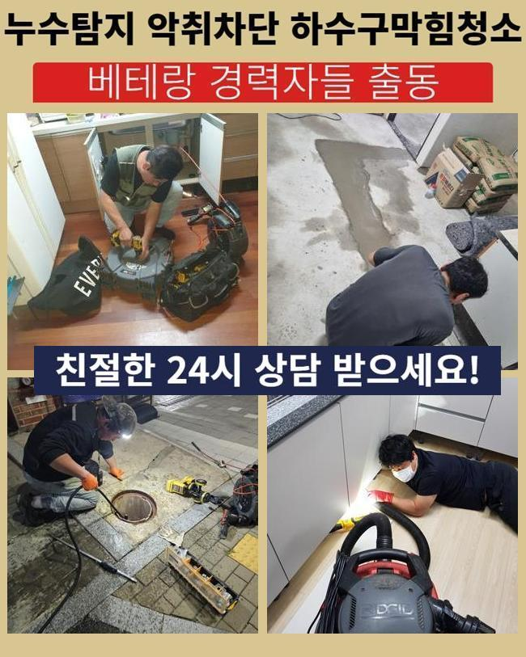
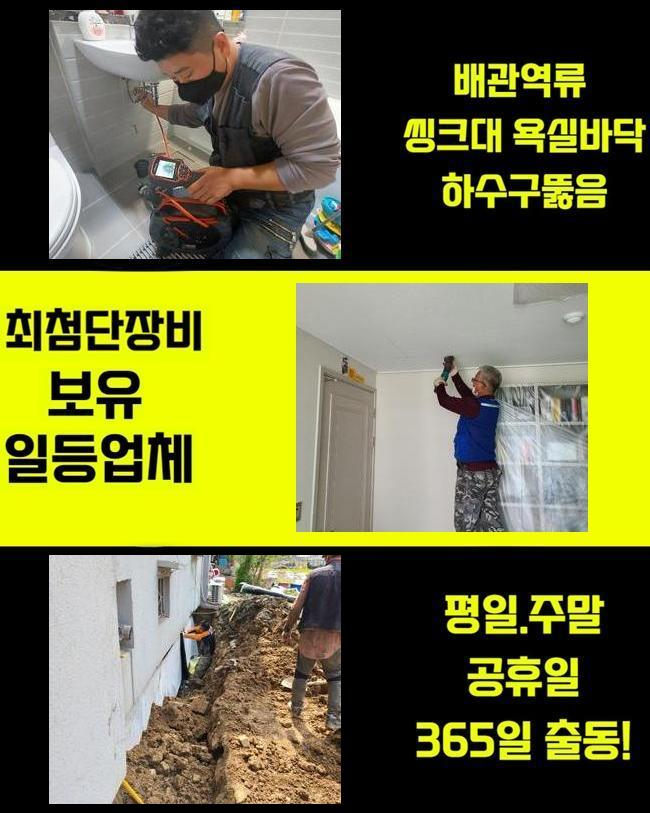
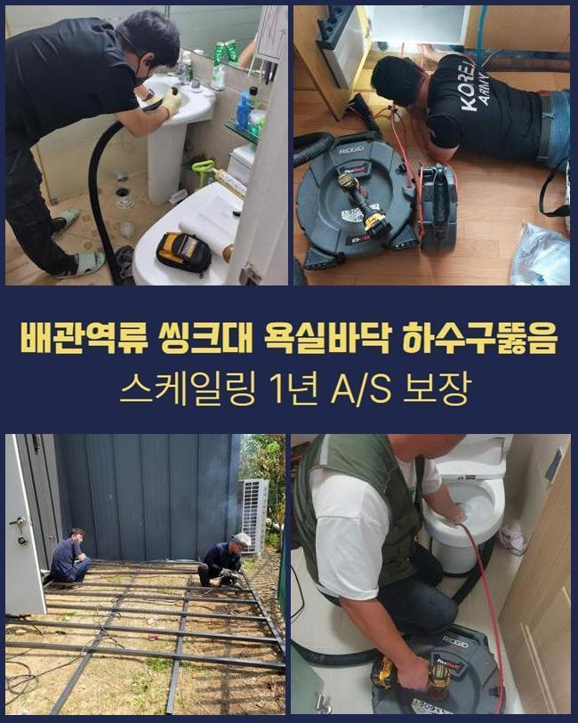
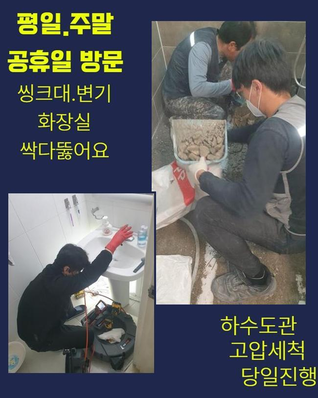

🏠 안산 중앙동씽크대막힘 백운동 하수구청소장비 부속수리
안산 중앙동 싱크대막힘 전문 시공 후기

📋 작업 개요
- 위치: 안산 중앙동, 중앙동, 안산
- 서비스 유형: 싱크대막힘, 하수구막힘, 배관막힘, 뚫는업체, 배관청소, 고압세척, 배관보수
- 작업 일시: 2025. 1. 22. 22:02
- 업체명: 하수구수사대 (010-5615-2118)
🔍 문제 상황
안산 중앙동씽크대막힘 백운동 하수구청소장비 부속수리
생활하수를 활용하다보면 다수의 원인으로 인해 하수구 내에 이물이 층을 이루고 불어날 수 있어요
노폐물이 점점 양을 불리면 강력한 돌덩어리처럼 접착이 되어버릴 수 있어서 물을 아무리 부어도 변화가 없어요
벽체에 부착되어 있는 이물질을 처리해 내고자 타격을 마구잡이로 가하다가는 하수구가 상처를 입는 전례없는 일도 생깁니다
겉으로 문제가 드러나는 배관 속 환경일지라도 전문성있는 약품과 도구를 써서 청소를 해줘야 원활하고 차질없이 배관을 되돌릴 수 있어요
홀로 하수구 뚫음을 시도하면 전체적인 문제를 전부 포착하긴 힘들며 괜히 수고로운 시간을 보낼겁니다
이번에 갔던 곳은 세입자의 거처였는데 하수가 막히고 범람해서 실내가 지저분해져서 황급히 저희에게 작업을 연락 걸어주신 장소였습니다
지체하는 시간을 줄이고 작업에 들어가는 도구를 갖고 초인종을 눌렀습니다
막힌 장소로 안내받아서 어떤 상황인지 살펴보니 바닥의 배수구에서 심지어 물이 분출되는 상황이더라고요
저희를 찾기 전에 가루와 액체로 된 세척제를 넣어 관통해보려 하셨지만 속시원하게 해결되지는 않고 변화가 없었다고 합니다

🔎 원인 분석
💡 전문가 진단: 정밀 진단 장비를 사용하여 슬러지의 고착 여부를 판명하고 타격/세척 작업을 실시했습니다.
속의 하수도 치고올라오니 악취까지 상당해서 벌레가 생길까 조마조마하며 위기에 봉착했다고 하셨어요
하수구 고장을 확실하게 제거하는 게 목적이라면 바탕이 되는 이유가 뭐길래 이와 같은 막힘이 나타났는지 확실하게 상황을 분별해야 합니다
시공에 뛰어들기 이전에 빠지지 않고 소지한 내시경 기기를 안으로 보내어 관로 안을 스캔해봤습니다
내시경이 비춰주는 화면을 보며 세세하게 관측해보니 특정 영역에 집중하여 기름때가 잔뜩 뭉쳐있는 상황이 원인이 됐음을 추정할 수 있었습니다
이처럼 강력하게 결합한 기름슬러지를 압박해서 해체시키고자 한다면 관로에 누공이나 균열이 일어날 수도 있습니다
맞춤으로 오물을 없애는 툴이나 약물의 힘을 빌리는 게 훨씬 안전합니다
작업 전의 탐색 절차를 통해서 파악한 세부 사항을 고객님께 소상히 전달드리고 세척을 위한 장치를 적용해서 정화를 해주었어요
고압의 물을 활용한 작업이 투입됐는데 중간 정도 정화가 완료됐을 때 재차 한번 조금씩 이동하며 스크린을 주시하면서 변화한 컨디션을 체크했습니다
물기가 빠지려는 움직임을 보았으나 아직까지는 제거작업이 남아 있는 상황이어서 조금 끊어갔던 세정을 거쳤습니다
고형물이 분리가 되고 관통이 완료되었음을 최종으로 보고서 절차를 매듭 지을 수 있었습니다

🔧 작업 과정
정말 끝으로 내시경 검토를 실시해보니 가득 끼어있던 기름층들이 소거 처리가 완료돼서 배수로가 새것처럼 탈바꿈 된 상태임을 알게 됐습니다
관로의 이곳 저곳에서 단단하게 말라 붙어있던 기름덩어리의 존재감이 인상적일 정도였지만 천만다행이게도 다른 장치를 별도로 쓰지 않고도 사태가 마무리 되어서 시간을 아낄 수 있었어요
물컹거리는 유분이 아니라 석회가 원인이 되어서 고장이 빚어진 장소였으면 단순한 절차로는 종결되지 않아요
만일 석회로 변성된 찌꺼기가 물길을 봉쇄하고 있다면 바로 장치부터 켜기 보다는 석회의 밀집도가 풀어지도록 용해제로 전처리를 합니다
부드럽게 녹이는 약제를 삽입하고 대기하면 겉으로 흰 거품이 나오게 되는데 여기서 수돗물을 붓고 경과를 보고 있으면 상호작용이 일어나면서 몰랑하게 변화합니다
석회제거제 제품들은 주변에 있는 상점에서 가볍게 살 수 없으므로 석회물질이 접착된 걸 인지했다면 필히 숙련가에게 맡겨야 긍정적인 결과가 있을 겁니다
셀프 클리너를 부어서 통수를 내보려는 시도를 하시는데 석회가 유발하는 상황 속에서는 클리너만 써서는 이렇다할 성과를 내지 못해요
배수로가 막히는 사태는 복합적인 이유가 있으니 큰 고민없이 뚫으려 하지 않고 먼저 내시경을 안으로 넣어서 가로막힌 쪽들이 어딘지 체크해야만 확실하게 배수관을 탈바꿈 시킬 수 있어요
도구 없이 봐서는 어둡고 깊은 하수구의 배수로 전체를 눈치 채긴 힘들어요
내시경 조사 결과를 통해 컨디션을 살피는 일이 기반이 되어야 합니다
하수구가 고장나는 일은 짧은 기간 생기지 않고 오래 시설이 작동하면서 물에 쓸려간 파편과 입자들이 차곡차곡 쌓여가다가 견고한 결합체로 굳어져 버립니다
아예 막혀버리지 않게 수시로 관리를 하는 것이 가장 좋은데 대표적으로 규칙적으로 온기가 있는 물을 배수관 안으로 부음으로써 머무르고 있는 잔해들이 딱딱하게 말라붙지 않도록 간헐적으로 희석시켜주세요
베스트는 이물질들이 빠져버리지 않도록 배수구 거름망을 설치하는 것이 안심되는 조치입니다
일반 빌라 아파트나 영업장이나 상가 등 수돗물을 활용한다면 예기치 않은 하수구 중단 사태를 직면할 수 있습니다
폐수과정이 더뎌졌다는 사실을 알게 됐으면 상황이 더 꼬이기 전에 올바른 시공으로 설비를 복원해야 합니다
막힌 상황이 고착화되면 잔수가 역 배출되어서 벌레나 악취와 같은 난항을 겪을 수 있으니까요


✅ 작업 완료
견디지 못한 관로에 균열이 생기면 인접한 아래층까지 피해가 일어날 수 있으므로 이걸 수습하기 위한 금액도 스스로 책임져야 할 것입니다
배관 장애물이 형성되지 않도록 유지 보수를 주의해서 하는 게 최선입니다!
신중하게 하수구 활용 요강을 지키더라도 잘 쓰다가도 갑작스레 막힘이 불가피하게 생깁니다
무리하게 배관을 다루지 마시고 저희에게 하수구 개선을 의뢰해 주시면 됩니다


⚠️ 주방 싱크대 배관 막힘 예방 수칙
- ✅ 기름기가 묻은 식기나 프라이팬은 설거지 전 키친타올로 반드시 기름때를 닦아내세요.
- ✅ 주기적으로 싱크대 개수대에 뜨거운 물을 가득 받아 한 번에 내려 배관 내부 기름을 씻어내세요.
- ✅ 배수구 거름망을 미세한 필터로 사용하시고 음식물 찌꺼기가 틈으로 새어 들지 않게 관리하세요.
- ✅ 베이킹소다와 식초를 뜨거운 물과 함께 일주일에 한 번씩 부어주면 배관 살균과 막힘 예방에 좋습니다.
💡 핵심 정리
- 확실한 장비 작업(내시경 점검 및 샤프트 스케일링)으로 원인을 뿌리 뽑습니다.
- 작업 후 1년 이내에 동일한 부위 재발 시 100% 무상 A/S 서비스를 보장합니다.
- 서울 · 경기 · 인천 전 지역에 24시간 언제든 긴급 출동할 수 있도록 항시 대기 중입니다.
❓ 자주 묻는 질문 (FAQ)
🚨 안산 중앙동 싱크대막힘 문제로 고민이신가요?
정확한 원인 진단과 확실한 시공으로 재발 없는 해결을 약속드립니다.
24시간 긴급 출동 | 서울 · 경기 · 인천 전지역 | 1년 내 재발 시 무상 A/S